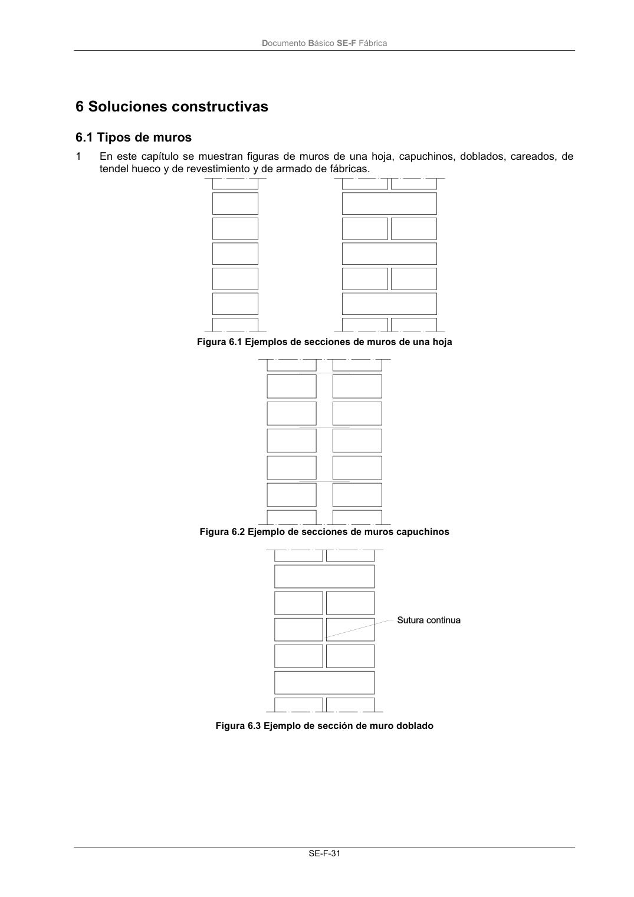

DB-SE-F Fábrica · edición 2019-12-20 · capa oficial
Documento DB-SE-F-oficial · SHA-256 del PDF e3e0805c3b4c307519c26dc34c3fdbf143d842edd013c91b0f52d2c73403d91c
Página física 35 de 70.
Copia fiel del PDF fuente · Fuente oficial
Ficha de la disposición en la fuente oficial
Formato: Texto de la página (Markdown)
Documento Básico SE-F Fábrica
SE-F-31
6 Soluciones constructivas
6.1 Tipos de muros
1
En este capítulo se muestran figuras de muros de una hoja, capuchinos, doblados, careados, de
tendel hueco y de revestimiento y de armado de fábricas.
Figura 6.1 Ejemplos de secciones de muros de una hoja
Figura 6.2 Ejemplo de secciones de muros capuchinos
Figura 6.3 Ejemplo de sección de muro doblado
